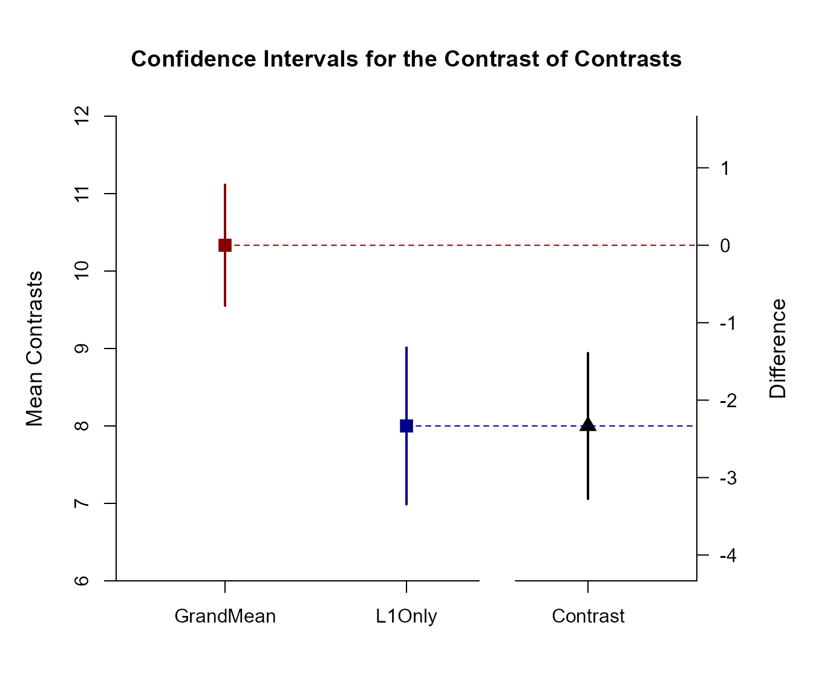

Complex OneWay Data Application
Source:vignettes/ComplexOneWayDataApplication.Rmd
ComplexOneWayDataApplication.RmdThis page analyzes differences between two contrasts using one-way (between-subjects) data.
Analyses of a Complex Contrast of Means
Estimate and plot the means for examination.
(Outcome ~ Factor) |> estimateMeans()$`Confidence Intervals for the Means`
M SE df LL UL
Level1 8.000 0.447 9.000 6.988 9.012
Level2 11.000 0.699 9.000 9.418 12.582
Level3 12.000 0.775 9.000 10.248 13.752
(Outcome ~ Factor) |> plotMeans()
Create a single contrast to compare the first group to the grand mean (which requires some arithmetic). Then esimate and plot the contrast.
(Outcome ~ Factor) |> estimateContrast(contrast = c(2/3, -1/3, -1/3))$`Confidence Interval for the Contrast of Means`
Est SE df LL UL
Contrast -2.333 0.458 25.917 -3.275 -1.392
(Outcome ~ Factor) |> plotContrast(contrast = c(2/3, -1/3, -1/3))
Analysis of a Difference Between Two Contrasts
Rather than setting just one contrast, set two contrasts: one for the Grand Mean and one for Level 1. Estimate and plot the confidence intervals for each contrast and the difference between contrasts.
(Outcome ~ Factor) |> estimateComplex(contrast1 = c(1/3, 1/3, 1/3), contrast2 = c(1, 0, 0), labels = c("GrandMean", "L1Only"))$`Confidence Intervals for the Contrasts of Means`
Est SE df LL UL
GrandMean 10.333 0.378 23.397 9.551 11.115
L1Only 8.000 0.447 9.000 6.988 9.012
$`Confidence Interval for the Contrast of Contrasts`
Est SE df LL UL
Contrast -2.333 0.458 25.917 -3.275 -1.392
(Outcome ~ Factor) |> plotComplex(contrast1 = c(1/3, 1/3, 1/3), contrast2 = c(1, 0, 0), labels = c("GrandMean", "L1Only"))
Enhance the plot by adding colors and removing value labels.
(Outcome ~ Factor) |> plotComplex(contrast1 = c(1/3, 1/3, 1/3), contrast2 = c(1, 0, 0), labels = c("GrandMean", "L1Only"), values = FALSE, col = c("darkred", "darkblue", "black"))